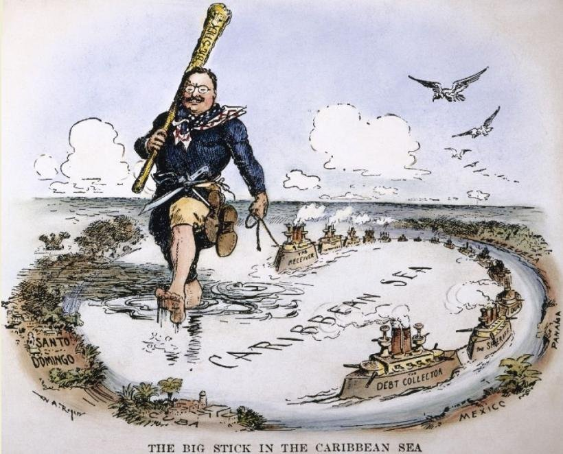

Directions: Study the cartoon and the background note, then answer the questions.

Background. In 1902 and 1903 Britain, Germany, and Italy blockaded Venezuela to collect debts. In his Annual Message of December 6, 1904, President Theodore Roosevelt announced what became known as the Roosevelt Corollary to the Monroe Doctrine. A Western Hemisphere country that kept order and paid its obligations, he said, need fear no interference from the United States. Chronic wrongdoing, or a government unable to act, could force the United States to exercise an international police power. In 1905 the United States applied the policy in the Dominican Republic, taking over the customhouses, collecting the import taxes, and paying foreign creditors a fixed share.
1. What do the labels on the ships tell you about the work Roosevelt's navy is doing in this cartoon? Name two of the labels and explain each one.
2. Why did debt collection by European powers in the Caribbean worry Roosevelt? Answer with the Venezuela blockade and the canal route to Panama.
3. Turn to Asia. State what Hay's Open Door notes asked the powers to promise in China, then give the two step sequence of 1900: what the Boxers did in Beijing, and what the eight-nation force did in response.
4. Define dollar diplomacy. Then explain what happened in Nicaragua in 1912 that showed the limit of substituting dollars for bullets.
1. What do the labels on the ships tell you about the work Roosevelt's navy is doing in this cartoon? Name two of the labels and explain each one. The ships are tools of financial enforcement, not invasion transports. "Debt Collector": the navy stands behind collecting what Caribbean governments owe foreign creditors. "The Receiver": a receiver takes over the finances of an organization that cannot pay its debts, as the United States took over Dominican customs in 1905. "The Sheriff": the navy as police enforcing order in the hemisphere. Students should cite the oversized Roosevelt, the club, and his position standing in the sea itself: the cartoon claims the whole Caribbean as his beat. [Blueprint 5]
2. Why did debt collection by European powers in the Caribbean worry Roosevelt? Answer with the Venezuela blockade and the canal route to Panama. Britain, Germany, and Italy blockaded Venezuela in 1902 and 1903 to collect debts, showing that unpaid debts could bring European warships into the hemisphere for long stays, against the Monroe Doctrine. The Dominican Republic sat on the route to the Panama Canal, which the United States had begun building in 1904. If a European power intervened there to collect, it would hold a position next to the canal. The Corollary answered by having the United States collect the debts and keep order itself. [Blueprint 5]
3. Turn to Asia. State what Hay's Open Door notes asked the powers to promise in China, then give the two step sequence of 1900: what the Boxers did in Beijing, and what the eight-nation force did in response. The notes of September 6, 1899, asked each power to promise equal treatment for the trade of all nations inside its sphere of influence, with the Chinese treaty tariff applied to all and collected by China. In 1900 the Boxers, with Qing troops, besieged the foreign legations in Beijing for about eight weeks. An eight-nation force, including United States troops, fought its way to Beijing in August 1900 and lifted the siege. The Boxer Protocol of 1901 then charged China an indemnity of about 333 million dollars. [Blueprint 4]
4. Define dollar diplomacy. Then explain what happened in Nicaragua in 1912 that showed the limit of substituting dollars for bullets. Dollar diplomacy is President Taft's policy of using American loans and investment, backed by government pressure, to extend United States influence abroad. In Nicaragua the United States had backed the overthrow of President Zelaya in 1909 and arranged bank loans and an American customs collector. When Nicaraguans revolted in 1912, about 2,500 Marines and sailors landed to protect the government the loans supported, and a Marine guard stayed for years. The financial instrument worked only while the military instrument stood behind it. [Blueprint 5]
Teacher note. This check is formative. The common weak answer on question 1 reads the cartoon as a plan to conquer Caribbean countries as colonies. Push students to the labels: the cartoon's Roosevelt is collecting debts and policing, which is the Corollary's own claim, and the lesson question is how that differed from ruling colonies.